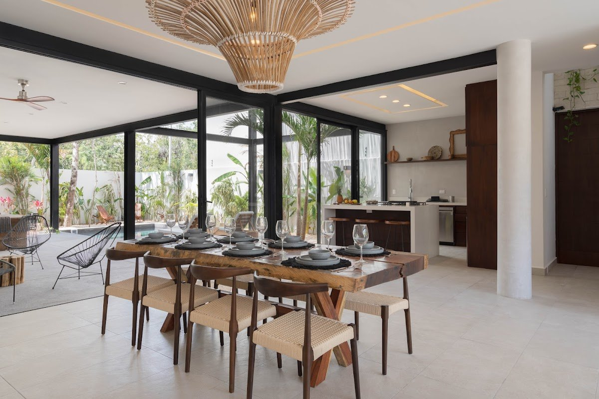

Buying Casa Aventura in Tulum: A Guide for Lifestyle and Investment Buyers

Casa Aventura, located in Aldea Zama, Tulum, is a property that attracts both lifestyle buyers seeking a personal retreat and those interested in rental income potential. Understanding the specifics of Casa Aventura and its place within the Tulum market is key for an informed decision.
Casa Aventura: Key Features and Location
Casa Aventura is designed for comfort and offers amenities that guests and owners value.
Casa Aventura Facts (from Aventuras Villas Facts Contract):
- Location: Aldea Zama, Tulum
- Community: Exclusive gated community
- Proximity to Beach: 10 minutes from Tulum beaches
- Bedrooms: 4 bedrooms
- Bathrooms: 4.5 bathrooms
- Capacity: Up to 10 guests
- Layout: Open-concept main floor
- Outdoor Space: Private outdoor lounge, cenote-inspired private pool
- Design: Modern design with local charm
- Kitchen: Full kitchen and dishwasher
- Pets: Pets welcome
Casa Aventura's location in Aldea Zama offers access to the community's infrastructure, including 24/7 security.
Practical Considerations for Casa Aventura Buyers
For those considering Casa Aventura, several practical points are worth evaluating:
Personal Use vs. Rental Use
- Personal Lifestyle: Casa Aventura's design and amenities, such as the private pool and open-concept layout, make it suitable for personal vacations and extended stays.
- Rental Potential: As a 4-bedroom villa accommodating up to 10 guests, Casa Aventura has features that can matter to guests. Rental results still depend on seasonality, pricing, guest experience, and management.
Due Diligence and Ownership Structure
- Legal Process: Foreign ownership in Mexico's coastal areas typically involves a `fideicomiso` (bank trust). Engaging local legal counsel is recommended to navigate this process.
- Property Specifics: Verify all property documents, including title deeds, permits, and any homeowner association rules in Aldea Zama.
Property Management Reality
- If you intend to rent out Casa Aventura, consider how property management will be handled. This includes maintenance, guest services, marketing, and compliance with local rental regulations. Professional property management can be a valuable partner.
Casa Aventura vs. Other Aventuras Villas Properties
Comparing Casa Aventura with other properties like Villa Sorella or the Villa Tikal project can help clarify your buying decision.
- Villa Sorella: Also in Aldea Zama, Villa Sorella offers similar capacity and amenities, including 4 bedrooms, private washrooms, and a private pool.
- Villa Tikal: This is a 5-bedroom priority sale/investment project in Aldea Zama, designed for buyers seeking a development opportunity. Villa Tikal is not treated as a rental villa.
Frequently Asked Questions about Casa Aventura
Where is Casa Aventura located?
Casa Aventura is located in Aldea Zama, Tulum, within an exclusive gated community.
How far is Casa Aventura from the beach?
Casa Aventura is approximately 10 minutes from Tulum beaches.
Does Casa Aventura have a private pool?
Yes, Casa Aventura features a cenote-inspired private pool.
Is Casa Aventura suitable for large groups?
Yes, with 4 bedrooms and 4.5 bathrooms, Casa Aventura can accommodate up to 10 guests.
Can I rent out Casa Aventura?
Casa Aventura has features that guests often look for, and many owners rent their villas. Rental performance depends on various market factors and effective management.
Connect for More Information
For a deeper understanding of Casa Aventura, its potential, or to compare it with other Aventuras Villas properties, explore our buyer resources.
- Buyer Ecosystem: https://onrelas.github.io/aventurasvillas/
- Official Links: https://linktr.ee/aventurasvillastulum
- WhatsApp Inquiry: https://wa.me/16478346090